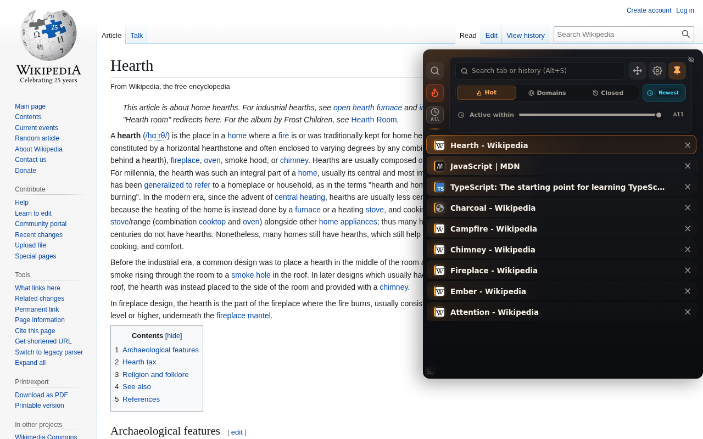
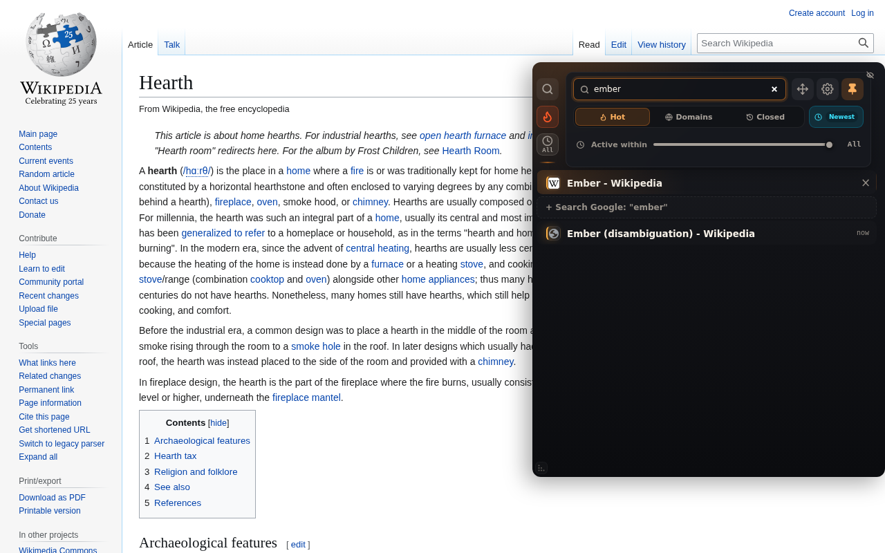
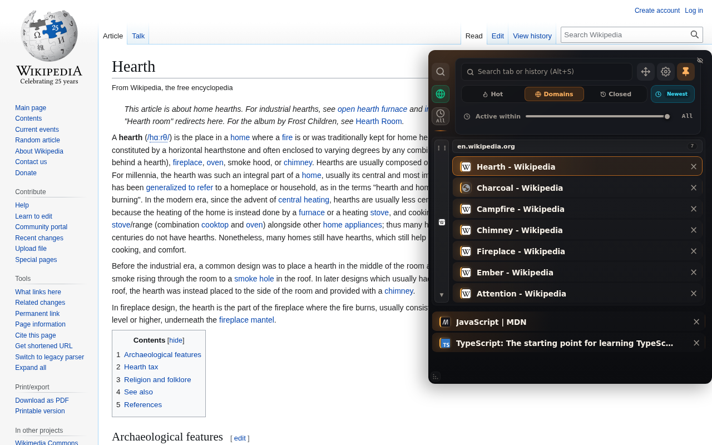

Never lose your train of thought.
vatra is a Chrome side panel for your tabs. The ones you keep coming back to stay warm and close at hand; the ones you've forgotten cool off and get out of the way. Everything runs locally — no account, no sync, no server.
What it does
- Sorted by real attention. Not by the order you happened to open things. vatra watches which tabs you actually return to and floats them to the top.
- Hover or Alt+S. The panel sits collapsed at the edge of the page as a thin strip. Hover it, or hit the shortcut, and it slides out with the search box focused.
- Search tabs and history together. Type; open tabs match first, recently closed pages underneath. Enter goes to the top hit.
- Hot, Domains, Closed. Three views — what's warm right now, everything grouped by site, and what you closed and might want back.
- Private by construction. Your tabs and history are read on your device and stay there. Read the privacy policy — it's short.



Install
Get vatra on the Chrome Web Store — free, and it works the moment it installs.
Something broken?
There's a feedback box in the extension's settings panel, or email vyshni.labs@gmail.com.